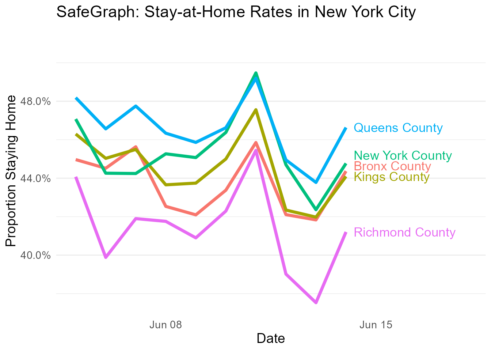

distancing_vignette.Rmd
library(SafeGraphR)This vignette will walk you through the process of reading in, processing, and displaying SafeGraph stay-at-home data.
Note that the stay-at-home-data is no longer being updated as of April 19, 2021. However, this should work for the old data.
This vignette will work with data from the social-distancing/v2/ SafeGraph Amazon Web Services bucket (see the SafeGraph Catalog for more information), which is no longer available.
Note that throughout this vignette, we will be working with data manipulation using the data.table package. data.table is used throughout SafeGraphR (and on the backend) because it is very fast and can handle large data sets easily. However, once the data is read in and processed, it’s often no longer necessary to use data.table if you prefer something else. The code in this vignette could have easily used, for example, dplyr instead. If you are having trouble understanding the code chunks because you’re familiar with dplyr but not data.table, see this guide that links the two.
We will read in the distancing data using the read_distancing() function. This relies on the files in the social-distancing/v2 bucket in the Amazon Web Services bucket, which you can download using safegraph_aws() (or using the AWS CLI). See the SafeGraph Catalog.
Once we’ve downloaded it, the files will be in a YEAR/MONTH/DAY/FILE structure. We can tell it where to begin and end reading files (we probably don’t want ALL the files - that would be very large!) by specifying a start and end date. Let’s get all the data from June 1 to June 14, 2020.
IMPORTANT: by default, read_distancing() will only select the variables necessary to get stay-at-home percentages, and will aggregate by the state and county level. If you want more variables from the data, change select. And if you want the original raw census block group-level data (origin_census_block_group), change by. There is also an option to filter the data.
# Our working directory is in the same folder as the "2020" folder
distancing <- read_distancing(
start = lubridate::ymd('2020-06-01'),
end = lubridate::ymd('2020-06-14')
)
data(distancing)
distancing[]
#> state_fips county_fips device_count completely_home_device_count
#> 1: 01 053 2735 704
#> 2: 01 073 55056 15661
#> 3: 01 089 30082 9208
#> 4: 01 095 8557 2147
#> 5: 01 097 32792 9484
#> ---
#> 45154: 35 021 42 8
#> 45155: 32 009 61 17
#> 45156: 48 433 137 35
#> 45157: 48 359 211 44
#> 45158: 31 171 52 9
#> part_time_work_behavior_devices full_time_work_behavior_devices
#> 1: 169 38
#> 2: 2818 792
#> 3: 1510 331
#> 4: 520 94
#> 5: 1912 461
#> ---
#> 45154: 3 1
#> 45155: 2 2
#> 45156: 11 4
#> 45157: 25 3
#> 45158: 1 1
#> date
#> 1: 2020-06-14
#> 2: 2020-06-14
#> 3: 2020-06-14
#> 4: 2020-06-14
#> 5: 2020-06-14
#> ---
#> 45154: 2020-06-01
#> 45155: 2020-06-01
#> 45156: 2020-06-01
#> 45157: 2020-06-01
#> 45158: 2020-06-01We will be calculating and using the percentage of each county that is staying home, which is completely_home_device_count/device_count, but we may need to do some adjustments.
We have a few goals at this point:
Any additional adjustments that we do depend on the level we want the eventual data at. If we want to aggregate the data up to a higher level (perhaps to get stay-at-home by state), we might want to do sample_size_adjust() to account for different sampling rates across regions. See the Patterns Vignette for an example of using sample_size_adjust().
If instead we want to report the granular individual-level data, we should perform Bayesian shrinkage with hb_shrink(). so that we don’t get strange results from small regions with few people in them.
Hierarchical Bayesian shrinkage basically says “we’re going to start by assuming that you, the individual county, are exactly the same as the overall state. Then we adjust that assumption by looking at your individual data. If you’re small, we won’t adjust much, since we don’t see much from you. But if you’re big, we adjust a lot.” We will be doing this to shrink counties to states, but you could instead shrink census block groups to counties or states.
hb_shrink() is a shrinkage function that only works with proportions. Conveniently, “the proportion staying home” is a proportion! Note, by the way, that if we had CBG-level data but wanted the eventual data at the county level, shrunk to the state level, we would sum up completely_home_device_count and device_count to the county level before using hb_shrink().
distancing <- distancing[,.(county_fips = county_fips,
completely_home_device_count = completely_home_device_count,
device_count = device_count,
raw_stay_home = completely_home_device_count/device_count,
shrunk_stay_home = hb_shrink(completely_home_device_count,device_count)),
by = .(state_fips, date)]
distancing[]
#> state_fips date county_fips completely_home_device_count
#> 1: 01 2020-06-14 053 704
#> 2: 01 2020-06-14 073 15661
#> 3: 01 2020-06-14 089 9208
#> 4: 01 2020-06-14 095 2147
#> 5: 01 2020-06-14 097 9484
#> ---
#> 45154: 78 2020-06-01 010 433
#> 45155: 78 2020-06-01 030 381
#> 45156: 78 2020-06-01 020 27
#> 45157: 69 2020-06-01 110 36
#> 45158: 69 2020-06-01 120 6
#> device_count raw_stay_home shrunk_stay_home
#> 1: 2735 0.2574040 0.2567292
#> 2: 55056 0.2844558 0.2843217
#> 3: 30082 0.3060967 0.3057083
#> 4: 8557 0.2509057 0.2508285
#> 5: 32792 0.2892169 0.2889632
#> ---
#> 45154: 1125 0.3848889 0.3832164
#> 45155: 1055 0.3611374 0.3600957
#> 45156: 114 0.2368421 0.2576238
#> 45157: 109 0.3302752 0.3432126
#> 45158: 13 0.4615385 0.4173651Next we will likely want to smooth things out and handle day-of-week effects by using the ma() moving average function. Don’t forget to sort first!
# Not actually run since we only have 14 days of data here anyway
data.table::setorder(distancing, state_fips, county_fips, date)
distancing[, shrunk_stay_home := ma(shrunk_stay_home), by = c('state_fips', 'county_fips')]Now we may want to consider scaling the data relative to a specific date in the past. This isn’t as necessary for distancing data as it is for patterns data, but it can make things easier to compare sometimes.
We’ll skip this scale-to-a-certain-date step with our example (see the Patterns Vignetter for an example of how this is done), but I will provide some code for doing a year-on-year adjustment, in case you want to combine multiple years of data to see how much more at-home we are this year than last year.
# let's pretend we have another year by just duplicating the data we have
fake_lastyear <- data.table::copy(distancing)
fake_lastyear[,date := date - lubridate::years(1)]
fake_lastyear[,shrunk_stay_home := shrunk_stay_home - runif(45158, max = .02)]
fake_lastyear <- rbind(distancing, fake_lastyear)
fake_lastyear_scaled <- scale_yoy(fake_lastyear,
yoy_vars = 'shrunk_stay_home',
by = c('state_fips','county_fips'))
# Notice the "2019" data has no growth since we din't give it 2018 data to grow from
fake_lastyear_scaled[,c('date','state_fips','county_fips','shrunk_stay_home','shrunk_stay_home_lag','shrunk_stay_home_YOY')]
#> date state_fips county_fips shrunk_stay_home shrunk_stay_home_lag
#> 1: 2019-06-01 01 001 0.2225649 NA
#> 2: 2019-06-02 01 001 0.2199512 NA
#> 3: 2019-06-03 01 001 0.1865503 NA
#> 4: 2019-06-04 01 001 0.1976422 NA
#> 5: 2019-06-05 01 001 0.1932117 NA
#> ---
#> 90312: 2020-06-10 78 030 0.2962983 0.2785883
#> 90313: 2020-06-11 78 030 0.2995778 0.2821803
#> 90314: 2020-06-12 78 030 0.2693960 0.2683497
#> 90315: 2020-06-13 78 030 0.3269283 0.3210544
#> 90316: 2020-06-14 78 030 0.3441301 0.3410606
#> shrunk_stay_home_YOY
#> 1: NA
#> 2: NA
#> 3: NA
#> 4: NA
#> 5: NA
#> ---
#> 90312: 0.063570791
#> 90313: 0.061654063
#> 90314: 0.003899023
#> 90315: 0.018295575
#> 90316: 0.008999834Let’s bring in the state and county names for nice labeling
Let’s take a look at the five boroughs of New York!
distancing[statename == 'New York' &
countyname %in% paste(c('New York',
'Kings',
'Queens',
'Bronx',
'Richmond'),'County')] %>%
ggplot2::ggplot(ggplot2::aes(x = date, y = shrunk_stay_home, color = countyname, label = countyname)) +
ggplot2::geom_line(size = 1.5) +
directlabels::geom_dl(ggplot2::aes(x = date + .25), method = list('last.bumpup', cex = 1.1)) +
ggplot2::scale_y_continuous(labels = scales::percent) +
ggplot2::scale_x_date(limits = c(min(distancing$date) + 4,max(distancing$date) + 4)) +
ggplot2::guides(color = 'none') +
ggplot2::theme_minimal() +
ggplot2::labs(x = "Date", y = "Proportion Staying Home",
title = "SafeGraph: Stay-at-Home Rates in New York City") +
ggplot2::theme(panel.grid.major.x = ggplot2::element_blank(),
panel.grid.minor.x = ggplot2::element_blank(),
text = ggplot2::element_text(size = 14))
#> Warning: Removed 20 row(s) containing missing values (geom_path).
#> Warning: Removed 20 rows containing missing values (geom_dl).